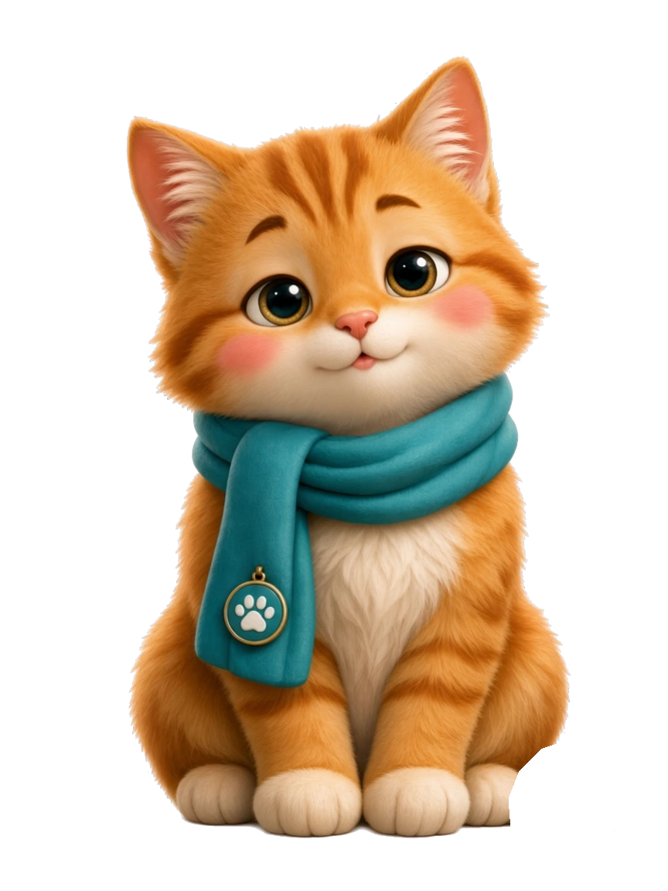
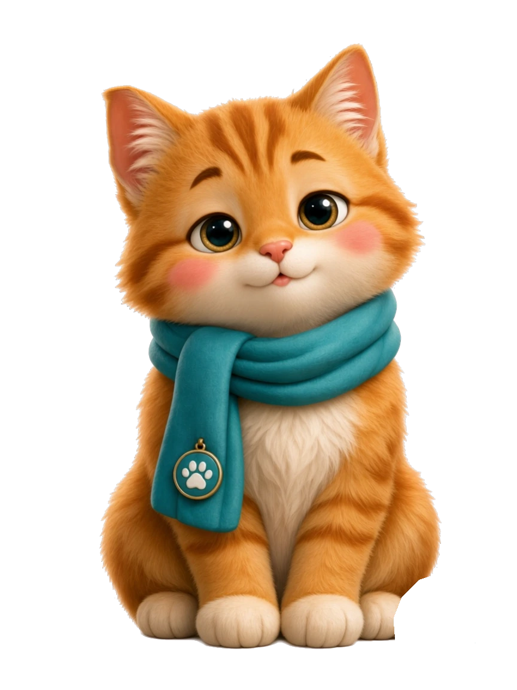
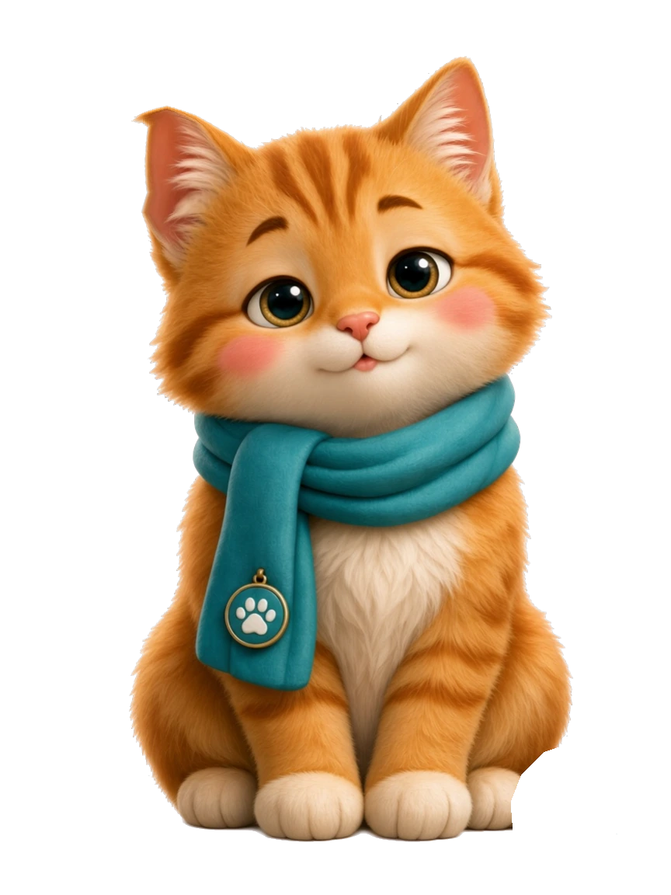
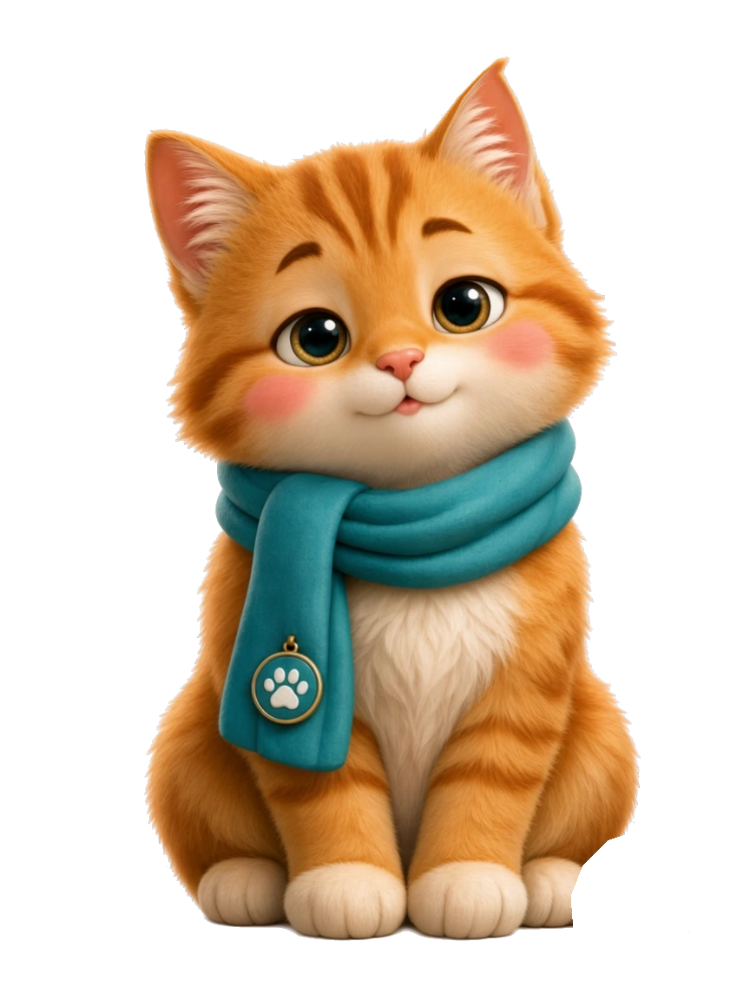
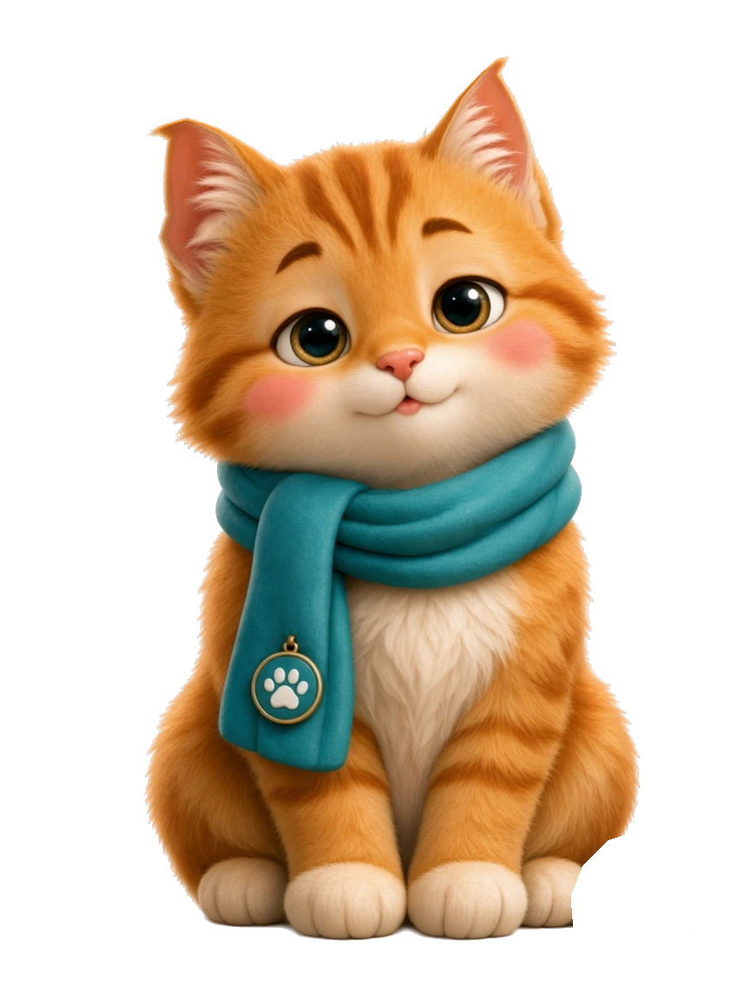
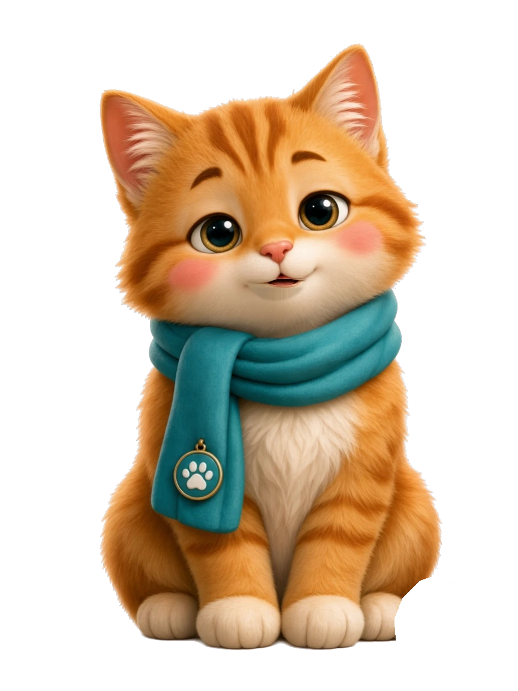
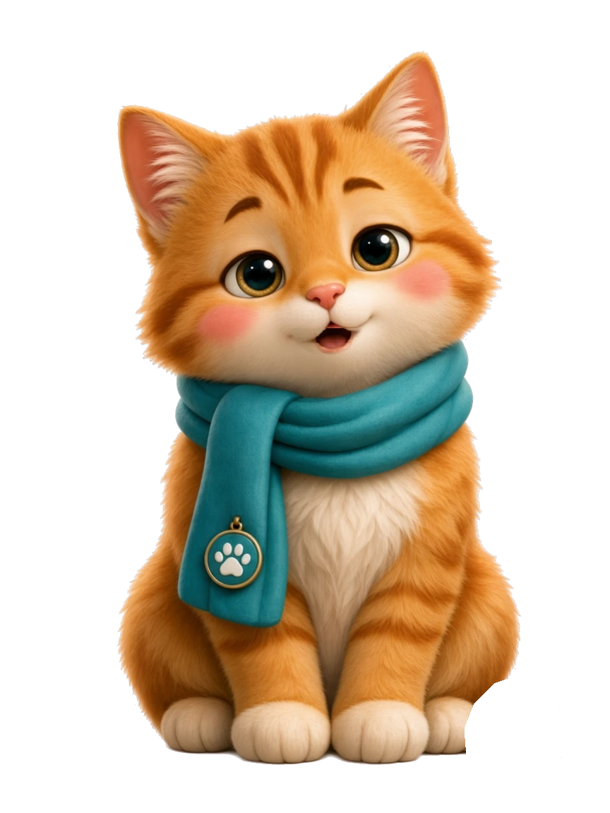

安安 v3 · 待机小动作预览（Spine 曲线版）
动作曲线按 Spine 社区实践重做：预备(反向)→爆发(快)→回弹→长回落，尾巴双谐波+微震颤。身体依旧完全静止。
待机 · 眨眼 + 抖耳 + 摆尾
抖耳有四种模式：单边（预备→爆发→回弹→回落，最常见）、双耳两级、单边连抽两下、慢垂后抬起（像被什么吸引了）。尾巴 = 慢摆 + 第二谐波 + 0.8s 微震颤，每 3.5–12.5 秒插一次阻尼快摆。
说话 · 下颌开合
开始说话
三级开口（细缝 / 中开 / 大张）+ 音节式节奏。只有嘴部像素变化。
状态切换
待机
倾听
开心
关切
眨眼
重点看切换瞬间：头顶、爪底、围巾是否位移。
素材（864 × 1152，RGBA）
base-idle

左耳预备 -1.5°

左耳回弹 3°

左耳到位 7°

右耳到位 7°

双耳 8°
眨眼

嘴 1 · 微开
嘴 2 · 中开

嘴 3 · 大张